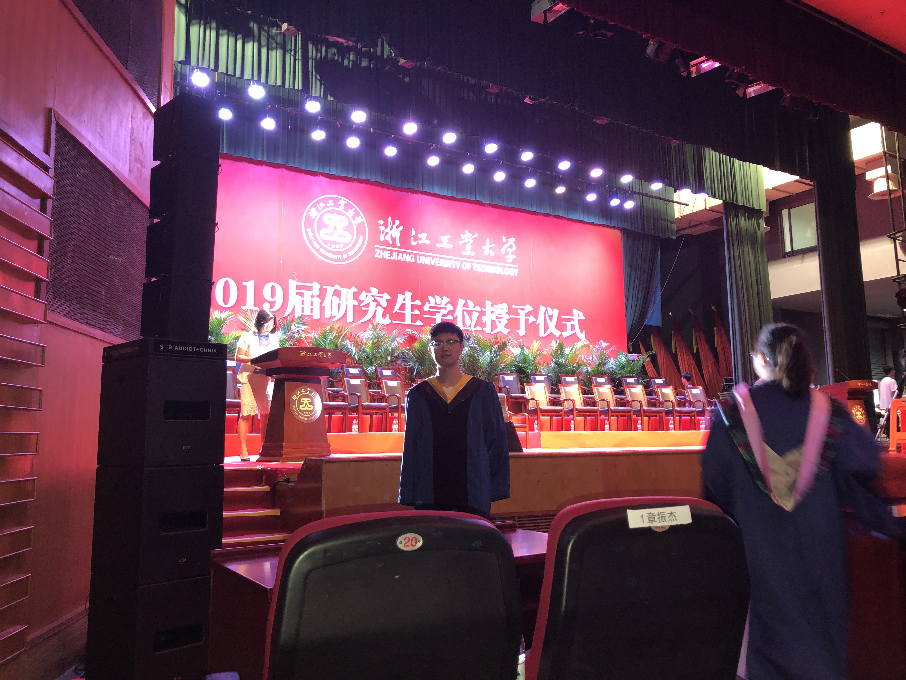
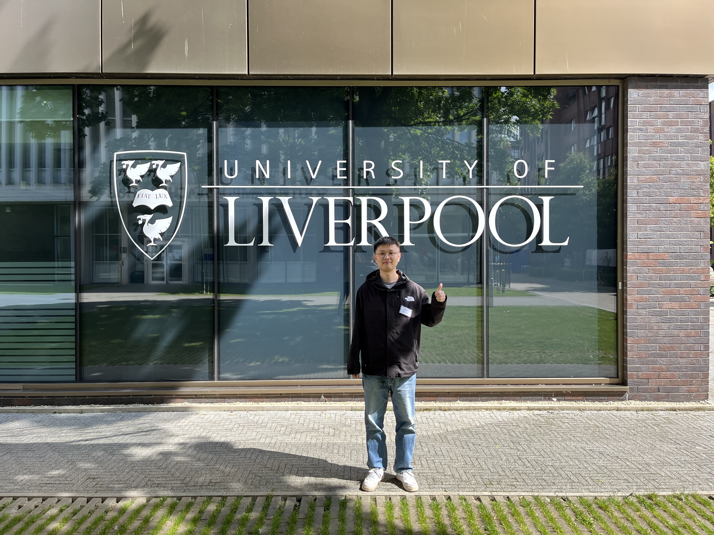
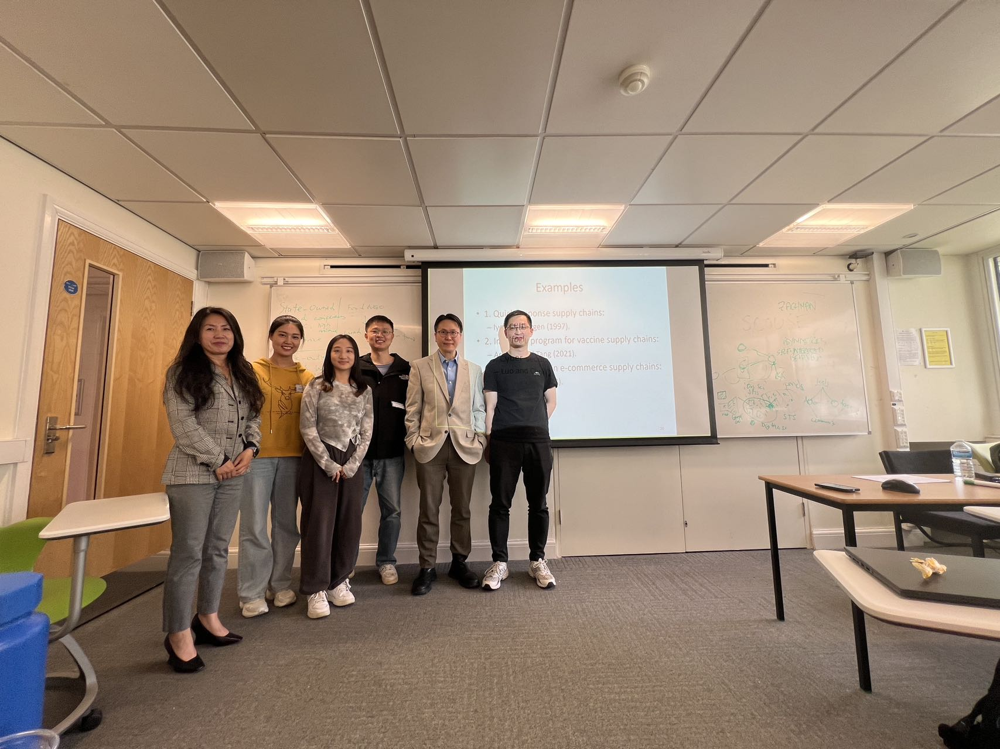
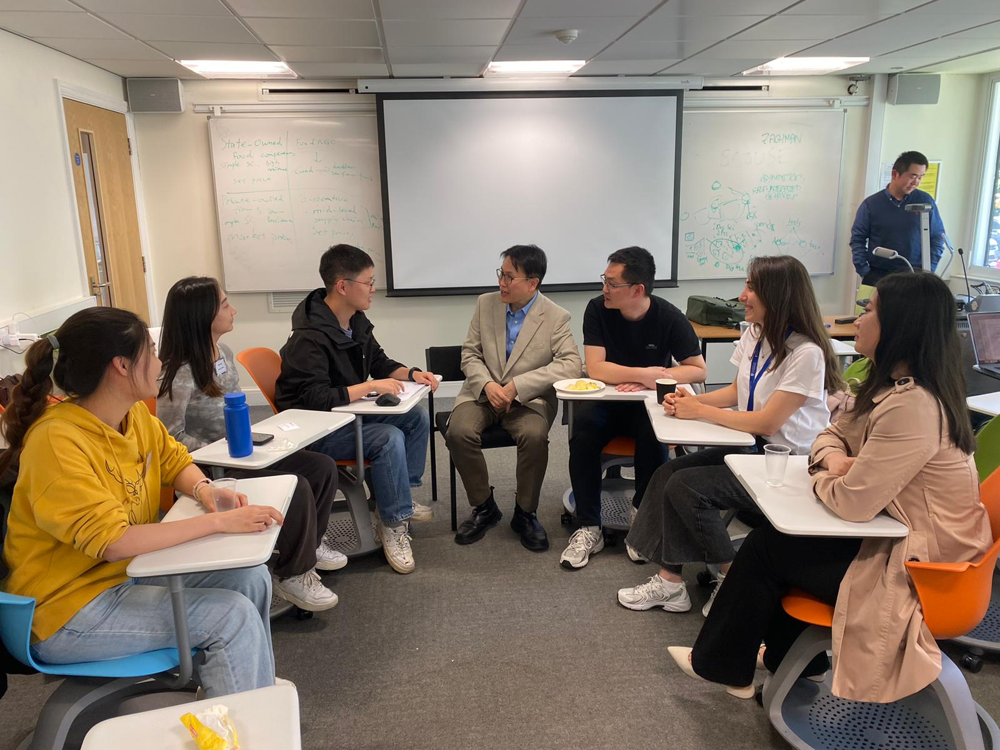
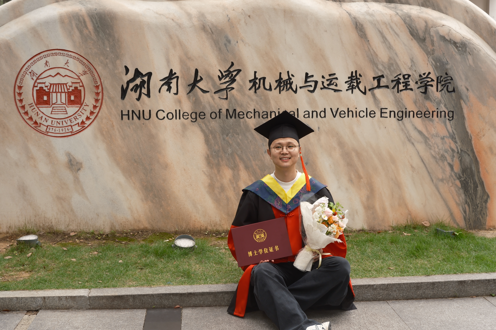
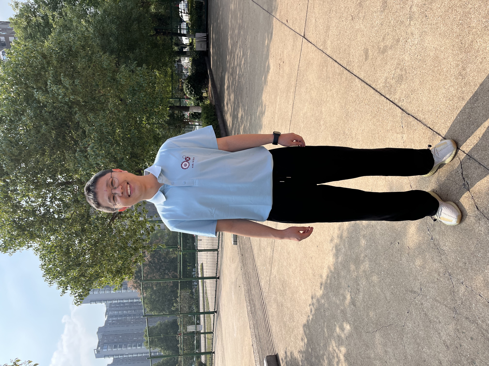

Master's graduation
A milestone that marked the beginning of my academic journey and a deeper interest in research and operations.

A milestone that marked the beginning of my academic journey and a deeper interest in research and operations.



A Ph.D. Summer School at the University of Liverpool Management School, providing an opportunity to exchange ideas and broaden my research perspective.


Completing my doctoral studies in Mechanical Engineering at Hunan University and beginning the next stage of my academic career.

Beginning my academic career as a Lecturer in the School of Mechanical Engineering, with a focus on operations management research and teaching.